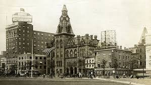
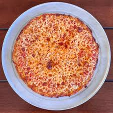

New Haven Pizzas

New Haven is a fantastic city with a spectacular culture. It houses one of the oldest universities in the country, Yale University. However, aside from books, what about the pizza! New haven is home to the bar pir, otherwise known as the "tavern style" pizza! Of course the midwest "holds their own" with their version of tavern style pizza. However, New Haven boast some of the best bar pies as well as coal fired pizzas!
History of New Haven Pizza

New Haven's pizza history stems from Italian influences. The bar pie features a prominent tomato sauce, garlic, oregano, and pecorino romano. In addition, the pizza pie is made usually with light mozzarella on a distinct, ultra-thin, and crispy-crust. The crust is so crispy that it is likened to a cracker! However, the inside if the dough is also slightly chewy. Moreover, the pizza is usually cooked in a coal fired oven. This gives the undercarriage of the pizza its unique charred appearance.